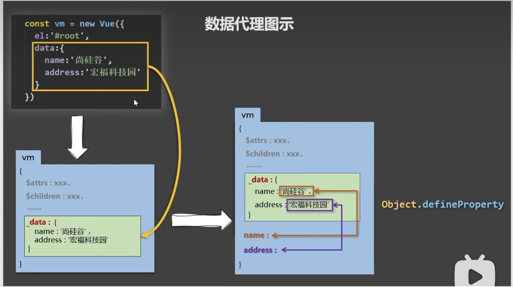

1.vue中的数据代理: 通过vm对象来代理data对象中的属性的操作(读/写)
2.vue中数据代理的好处:更加方便操作data中的数据
3.基本原理: 通过Object.defineProperty()把data对象中的所有属性添加到vm上. 为每一个添加到vm上的属性,都指定一个getter/setter. 在getter/setter内部去操作(读/写)data中的属性

名称:{{name}}
地址:{{address}}